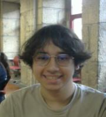

Estudante universitário
Olá, sou a Francisco.
Estudo Informática e Realidade Virtual gosto de poder realizar meus pensamentos em algo visível.
Ver o meu currículo
Sobre mim
Sou estudante do primeiro ano e tenho interesse em programação, design ,videojogos. Esta página é um dos meus primeiros trabalhos em HTML e CSS.
Currículo
Educação
2026 — Presente
Licenciatura em nada
Universidade UBI em covilhã
2023 — 2025
Ensino Secundário — Ciências e Tecnologias
Escola Secundária Campos Melo
Competências
- HTML
- CSS
- Python (básico)
- Trabalho em equipa
- Inglês